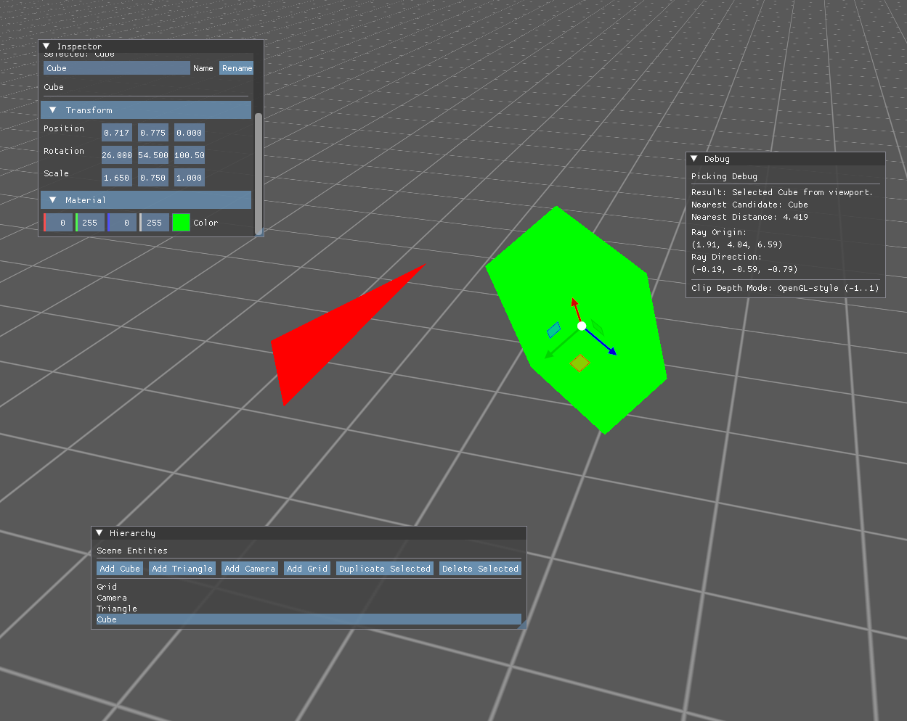

Personal Project · 2024–2025

This is a custom game engine built entirely from scratch, with no existing engine underneath it. I started it to understand how engines like Unity or Unreal actually work internally, by writing each part myself.
It covers what a real engine needs: rendering 3D objects, an interactive editor to place and adjust them, the ability to save and reload a scene, and a clean structure for writing game logic on top of it.
I chose to build an engine rather than just a game because I wanted to understand the tooling, not just use it. Working at this level requires strong fundamentals in systems programming, memory management, and API design.
Working at this level means there are no helpful error messages. When something is wrong with the rendering setup, the screen is just black. Debugging involves reading GPU validation output, tracing memory layout issues, and reasoning carefully about code that runs on hardware you cannot step through directly.
The main architectural challenge was keeping systems decoupled from each other. The scene serializer, for example, originally needed to be updated every time a new object type was added. I redesigned it as a registry where object types register their own save and load logic, so the engine core never needs to change.
Overall this project pushed me to think carefully about interface design and system boundaries. Getting those right early saves significant rework later, and getting them wrong is immediately felt.